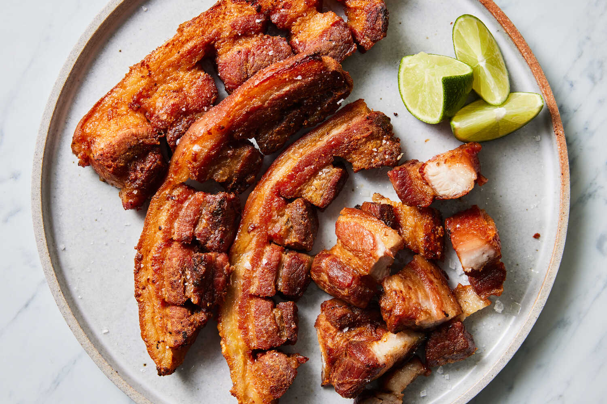

Chicaron Recipe

DESCRIPTION
Chicharrón (Spanish: [tʃitʃaˈron], plural chicharrones; Portuguese: torresmo [tuˈʁeʒmu, toˈʁezmu, toˈʁeʒmu]; Tagalog: chicharon; Chamorro: chachalon)
is a dish generally consisting of fried pork belly or fried pork rinds. Chicharrón may also be made from chicken, mutton, or beef.
INGREDIANTS
- Pork Rinds
- Oil
- Water
- Vinegar
- Garlic
- Salt
- Peppercorns
STEPS
- Cut the pork rinds into about 1 ½ to 2 inches. They will initially shrink in size when they render their fat in the oven but will expand and puff up when deep-fried in hot oil.
- Cook in vinegar, water, garlic, peppercorns, and salt until tender but not falling apart. Drain well and refrigerate to cool completely.
- Arrange the rinds in a single layer on a rack and pat down any excess moisture.
- In olden times, the cooked skins are laid out under the hot sun to dry out. Since this method is not exactly doable in cold weather and is unhygienic, for one thing, I prefer to use the oven to dehydrate the skins until shrunken and brittle.
- Deep-fry in hot oil until golden and crispy and begins to float. For the best texture, do not overcrowd the pan and fry in batches as needed to maintain proper oil temperature.
- Remove from pan and drain on a wire rack — season with salt and spices as desired.
HOME